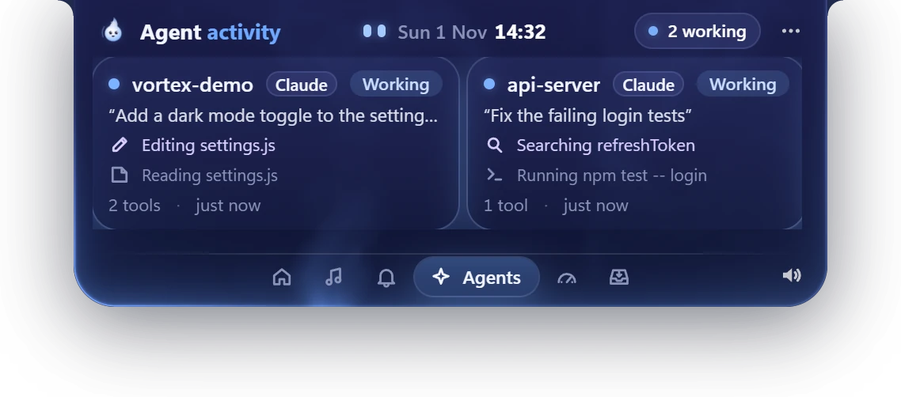
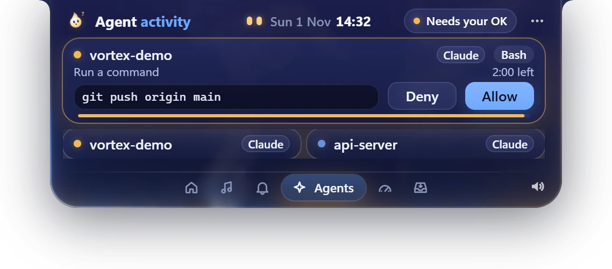
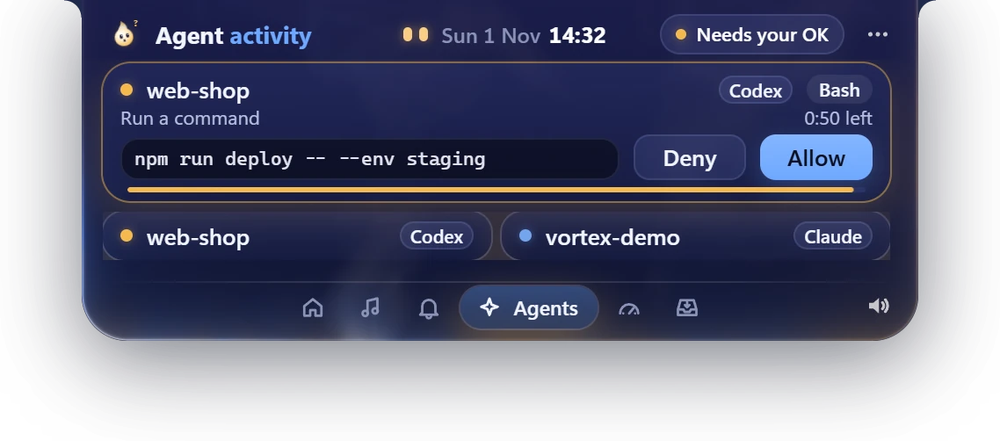
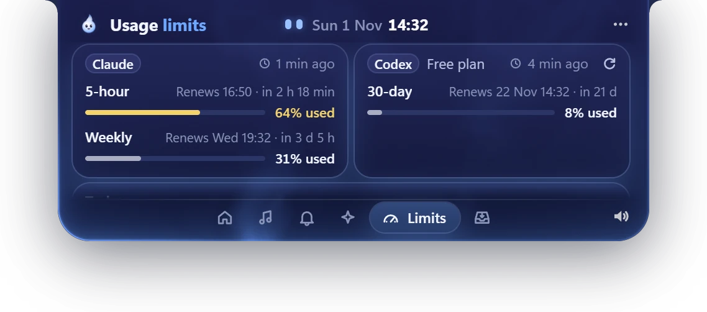
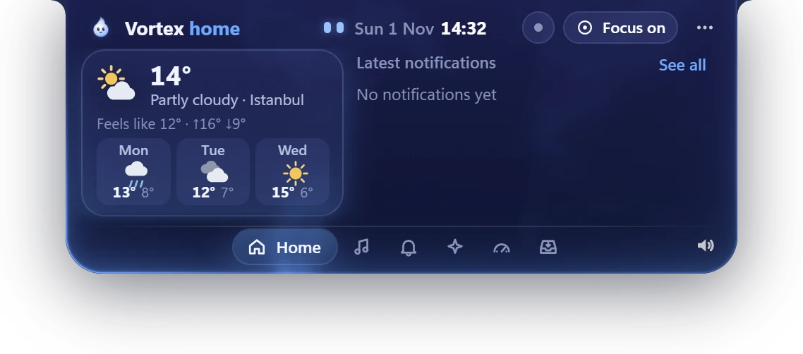
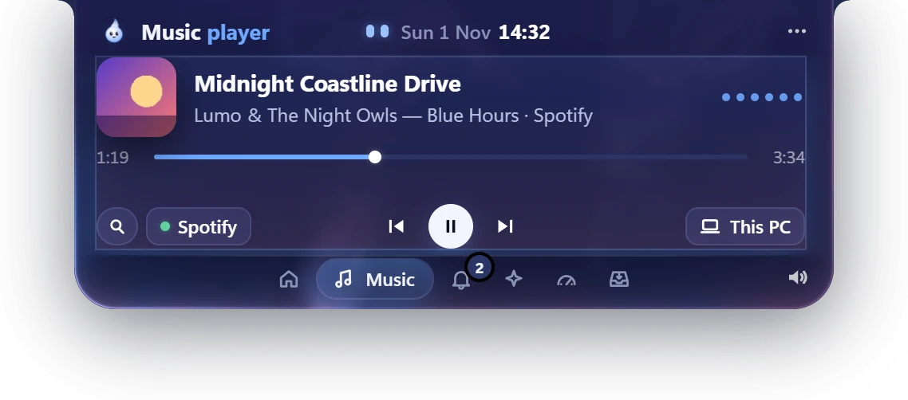
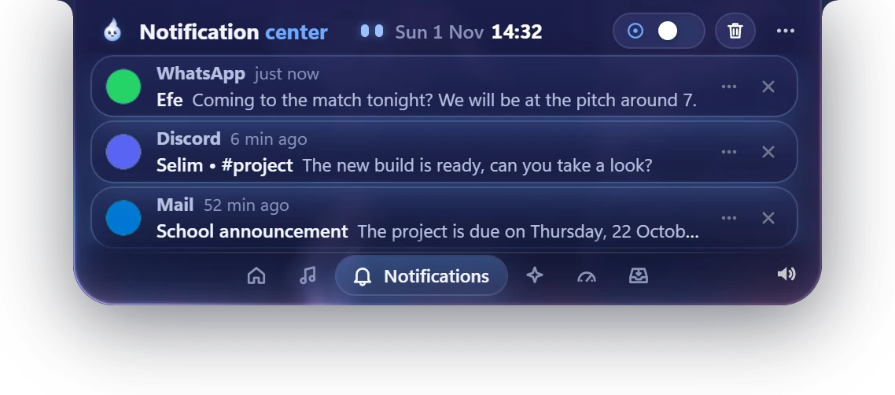
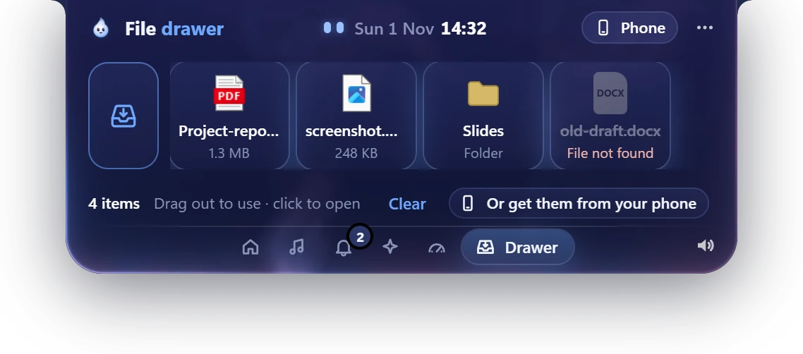

A dynamic island for Windows
See what your AI agent is doing, without leaving your work.
Vortex sits at the top of your screen and follows your Claude Code and Codex sessions live. Allow or deny permission requests right from the island, hear when the work is done, and keep an eye on your usage limits.
Windows 10 & 11 · free demo · v0.5.0 · 116 MB
- No account
- No telemetry
- No admin rights
- English · Türkçe


When the island is closed
Double-click it or press Ctrl+Alt+V to open it. Hovering never does.
-
Work finished
A short sound and a green dot.
-
A gentle limit warning
At 60, 80 and 90% it plays a sound and shows a short note. It never pops open by itself.
-
Nothing going on
Just the clock and the date format you pick.
Features
Everything at a glance. Nothing in your way.
Every picture is a real screenshot of Vortex 0.5.0 with demo data. Pick a feature to see it on the island.
-
(opens the full-size picture)
Live agent status
Every open Claude Code and Codex session as a card: the prompt, the current step, tool count and duration. The closed island shows what's happening right now with a coloured status dot.
-
(opens the full-size picture)
Allow or deny from the island
Permission requests show the exact command and a countdown. Click Allow or Deny, or press Y or N while the island has focus. No answer? Claude Code's own terminal prompt takes over.
-
Codex, too
Codex sessions and Codex approvals show up on the same island. Both agents can run at the same time; each card shows which one it is.

(opens the full-size picture) -
Usage limits
Claude's 5‑hour and weekly windows and your Codex windows: how much is used and when each one renews. Alerts at 60, 80 and 90% (you can change the thresholds), a pace estimate and a 7‑day chart.

(opens the full-size picture) -
Focus mode
One switch silences notification pop-ups, agent sounds and island flashes. Only permission requests and the last limit warning get through, and everything still waits in the lists.

(opens the full-size picture) -
Music
Control whatever Windows is playing: play, pause, skip, seek, album art. Search and play songs with Spotify or the YouTube Music desktop app.

(opens the full-size picture) -
PC notifications
WhatsApp, Discord, Mail: anything that posts Windows notifications peeks out of the island and collects in a list. Mute apps or hide message content.

(opens the full-size picture) -
File drawer
Drop files on the drawer to park them, drag them back out wherever you need them, click to open. Vortex keeps only a reference, never a copy.

(opens the full-size picture)
Also on the island
- Clock, date and weather with a 3‑day forecast
- Volume bar and mouse-wheel volume
- Three themes: Vivid, Formal and Calm
- Two sizes: Classic and Large
- English and Turkish
Video
See it in motion
A tour of Vortex 0.5 in just over a minute: agents and Codex, usage limits, music, the file drawer and themes. Captions in English.
How it works
Up and running in three steps
-
Download the installer
About 116 MB. It installs for your user only, so no admin rights are needed.
Vortex-Setup-0.5.0.exe -
Get past SmartScreen
The installer isn't code-signed yet, so Windows may say “Windows protected your PC”. Click More info, then Run anyway.
-
Connect your agents
Open Settings and click Connect next to Claude Code (or Connect Claude Code on the empty screen); Vortex backs up your settings first. For Codex, click Connect Codex and approve the hooks once with
/hooks. To see your Claude limits, turn on Claude limits in Settings.
Disconnecting removes only what Vortex added. If Vortex is closed, Claude Code and Codex keep working normally.
Privacy
Vortex never sends your code anywhere.
-
Local only
Claude Code and Codex talk to Vortex only on your own computer, through a server on 127.0.0.1 protected by a secret token.
-
No account, no tracking
There is nothing to sign up for, and there are no analytics and no telemetry. Your PC notifications are kept in memory only.
-
Only a few named internet calls
Weather from Open-Meteo. Unless you pick a city, your approximate location is looked up once per start from your IP via ipwho.is. Spotify and music cover art only if you connect them.
At a glance
- Platform
- Windows 10 & 11 · x64 (tested on Windows 11)
- Version
- 0.5.0 · 7 Nov 2026
- Installer
- About 116 MB · for your user, no admin rights
- Agents
- Claude Code · Codex (CLI and app)
- Hooks
- 127.0.0.1 only · secret token
- Themes
- Vivid · Formal · Calm
- Sizes
- Classic · Large
- Languages
- English · Turkish
- Open / close
- Double-click · Ctrl+Alt+V · Esc closes
- SHA-256
- 8223aaffdcbd5183b0af6133784551b99a3726860583821c5a6b75b9d8d987d1
Changelog
Patch history
Every update so far, newest first.
-
v0.5 Latest
- Renewal time on every limit window, absolute and relative.
- Reminders 2 days and 1 day before the weekly limit renews (plus an optional 5‑hour one).
- Usage history, a pace estimate and a 7‑day chart.
- A small celebration when a limit renews; optional renewal countdown on the closed island.
- Usage summary every time Vortex starts.
- New default “Vivid” theme with four accent colours.
-
v0.4
- Codex alongside Claude Code: live Codex sessions and Codex approvals on the island.
- Usage limits: a Limits tab with 5‑hour, weekly and other windows; alerts at 60 / 80 / 90%.
- Lumo sleeps at 90% (adjustable) and shows when the limit is back.
- Y / N keys to allow or deny; session cards with context %, duration, estimated cost and the last message.
- Focus mode and a daily “Today” summary.
- New black “Formal” theme with a theme picker.
-
Design update still v0.2
- A notch-style black island attached to the top edge, with spring animations and an icon tab bar.
- A shorter, wider open island and a new Music layout.
- File drawer: park files, drag them out, click to open.
- Subtle WebGL light behind the island (can be turned off).
- Two sizes (Classic / Large), Settings in a wider panel, clock and date on the closed island in five formats, calmer colours, smoother animations.
-
v0.2
- Music: controls for any Windows media player, plus search and play with YouTube Music and Spotify.
- Volume: a level bar on every change, mouse-wheel volume on the island.
- Clock and weather with a 3‑day forecast.
- Your PC notifications on the island, with per-app mute and content hiding.
- New Home, Music and Notifications tabs.
-
v0.1
- The island: a small pill at the top of the screen showing what Claude Code is doing.
- Session states: working, needs your OK, done, error, plus recent history.
- Allow or deny permission requests from the island (the terminal takes over after 120 s).
- One-click connect and disconnect for Claude Code, with a backup of your settings.
- Sounds and Windows notifications when work finishes; tray menu; double-click or Ctrl+Alt+V.
- English and Turkish; Lumo's moods.
FAQ
Questions, answered
Is Vortex free?
Yes. The current version is a free demo. A paid full version is planned for later; it has no price yet.
What's in the demo?
Version 0.5.0 with every feature on this page: agents, limits, focus mode, music, notifications, volume, weather, the file drawer, themes, English and Turkish.
Does Vortex send my code anywhere?
No. Claude Code and Codex talk to Vortex only on your own PC (localhost, protected by a secret token). Vortex has no account, no analytics and no telemetry. Its only internet calls are weather from Open-Meteo, an approximate location from your IP via ipwho.is (once per start, only if you haven't picked a city) and, if you connect them, Spotify and music cover art.
Why does Windows show a SmartScreen warning?
The installer isn't code-signed yet, so Windows doesn't recognise the publisher. Click More info, then Run anyway.
Which agents does it support?
Claude Code and Codex (the CLI and the Codex app). Both can run at the same time; each card shows which agent it is.
Is there a Mac version?
No. Vortex is made for Windows 10 and 11 (tested on Windows 11).
Does it work without Claude Code?
Yes. Music, notifications, volume, clock, weather and the file drawer work on their own. The agent and limit features need Claude Code or Codex. Claude limits need a Pro or Max plan; Codex limits need a ChatGPT sign-in.
How do I connect it?
Open Settings and click Connect next to Claude Code (or Connect Claude Code on the empty screen); Vortex backs up your settings and adds its hooks. For Codex, click Connect Codex, then approve the hooks once with /hooks in Codex. For your Claude limits, turn on Claude limits in Settings; your status line keeps working the same. If you have no status line yet, Vortex asks before adding one.
How do I uninstall it?
First click Disconnect in Settings (Claude Code, Claude limits and Codex) so Vortex removes its hooks and restores your status line. Then uninstall Vortex from Windows Settings › Apps.
Will it slow down Claude Code?
Not for normal work. Hook calls are tiny local requests, and if Vortex is closed Claude Code just carries on. One thing to know: while Vortex shows a permission request, Claude Code's own terminal prompt waits until you answer on the island or 120 s pass (50 s for Codex).
Keep your agents in sight.
Free demo for Windows 10 & 11, in English and Turkish.
Download free demov0.5.0 · 116 MB · not code-signed yet, see step 2